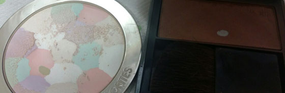

백만년만에 힛팬입니다!!! :D :D
겔랑 메테오리트 컴팩트 라이트 리빌링 파우더
쉐딩 & 하이라이터는 꼬박꼬박 사용했는데 겔랑 컴팩트로 얼굴 전체 쓸어준후 하이라이터는 생략하고 있습니다.
왜냐하면 아직 이거닷 싶은 하이라이터를 못 골랐기 때문이죠........OTL
현재로서는 로라메르시에 01번을 생각중이고 다른제품도 테스트해보고 싶은데 문제는 리서치할 시간이 없셔......ㅜㅜ
요즘엔 뭐 하나 살려해도 정보가 너무 많아 들이는 시간, 노력이 엄청난거 같습니다 ^^;;;
전체적 감상은 바르면 엄청난(?) 효과는 모르겠는데 사용하지 않음 (나만아는 ^^) 바로 티가 나는 신기한 제품입니다.
아침에 매일같이 사용했더니 힛팬 보았네욤 신난다~
그나저나 브러쉬로 쓸어주는데 왤케 지저분해 지는지 -_-;;;
버버리 얼씨
쉐딩으로 이것도 역시 아침마다 열심히 사용하고 있습니다.
부지런히 사용해서 바닥 봐야겠어요 ^^